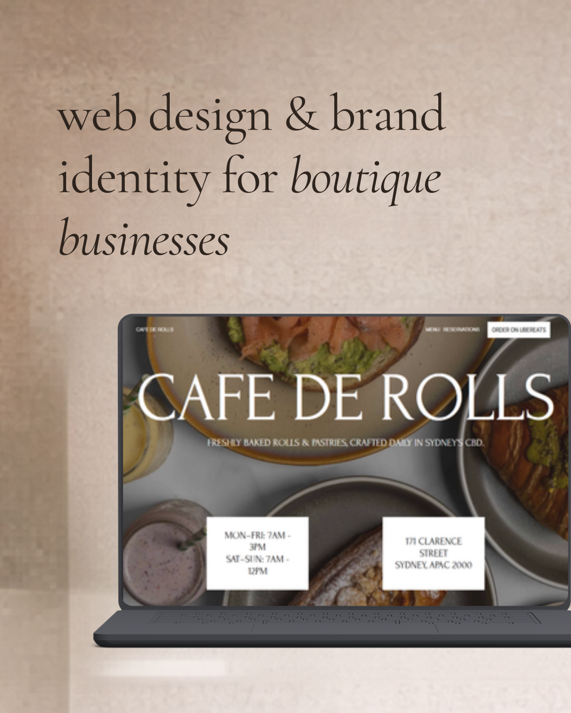
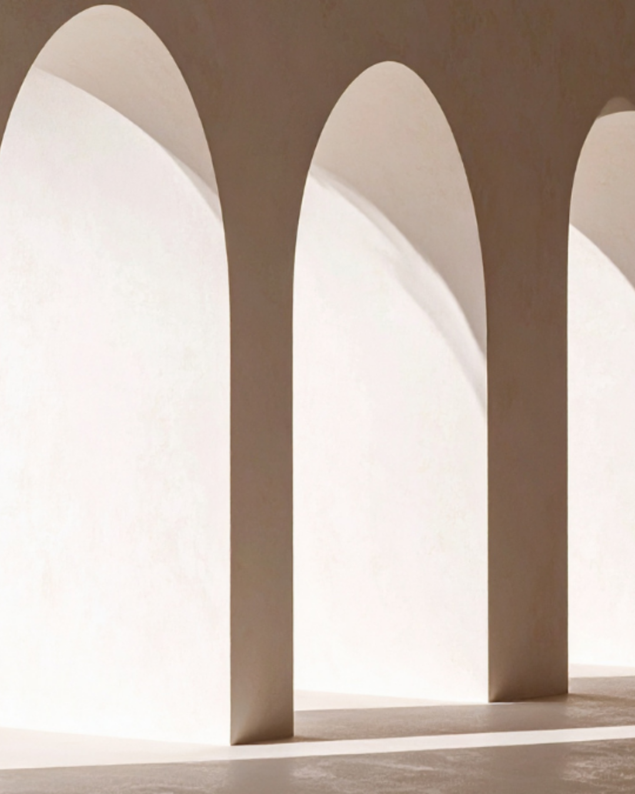
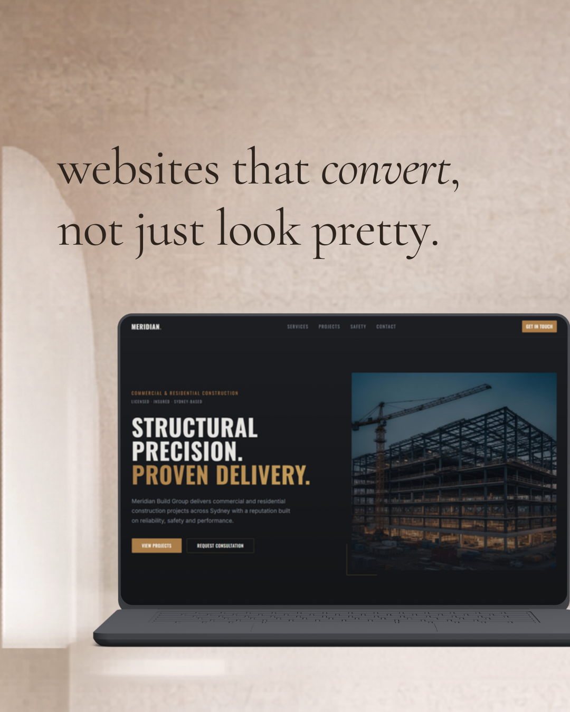
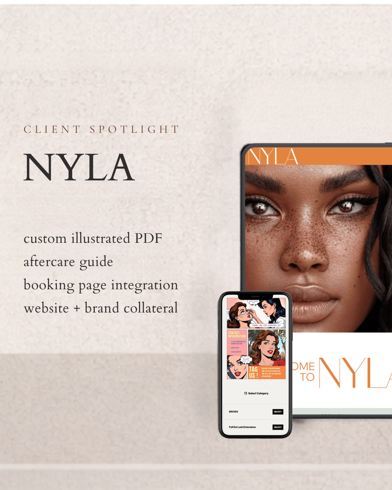
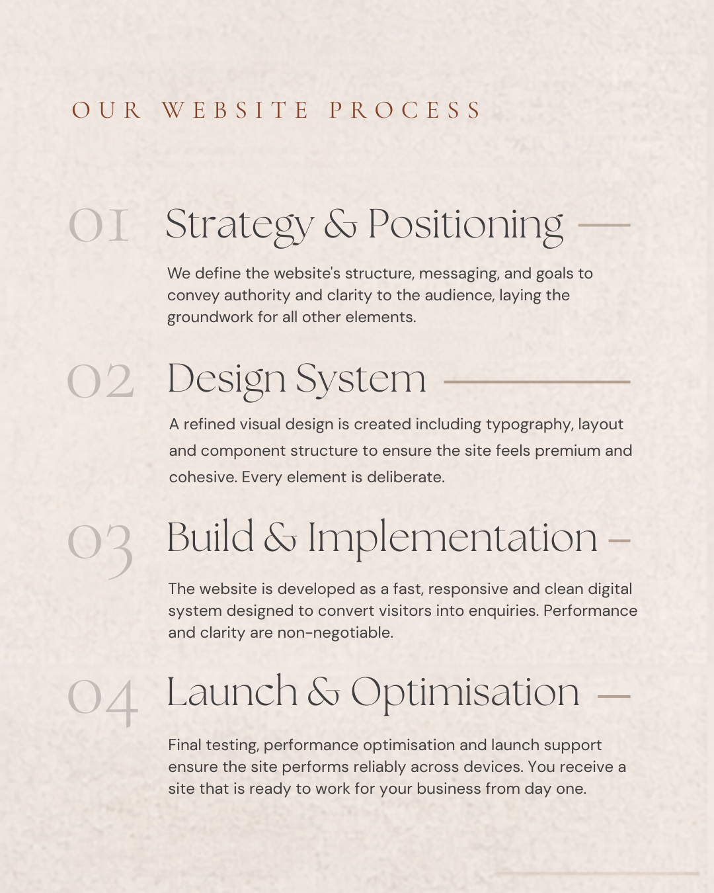
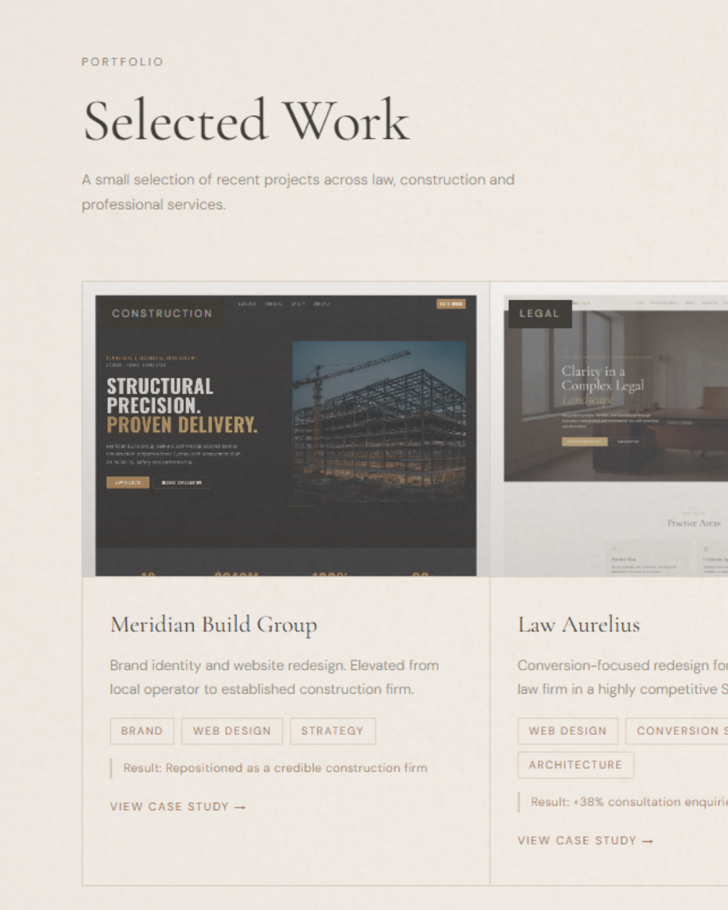

Belle Digital Studio needed a website that functioned not only as a portfolio, but as a strategic platform to attract and convert boutique service businesses. The site introduces the studio’s positioning, showcases selected client work, and communicates the design philosophy behind every project.
The goal was to create a calm, premium digital environment that reflects the same clarity and attention to detail offered to clients.

Add assets/9.png to display the opening Belle Digital Studio visual in this hero.
Before refining the final interface, early wireframes were used to map out content hierarchy, service positioning, and the relationship between portfolio content and conversion-focused sections. This helped define a structure that would feel calm, premium, and easy to navigate before the final visual language was applied.
The aim was to keep the experience editorial and strategic, balancing brand presentation with clear pathways for potential clients to explore work and make enquiries.
This site was designed as the public-facing foundation for Belle Digital Studio: a place to articulate positioning, establish trust, and convert the right type of enquiry.
Rather than framing the studio as a generic web service, the structure presents a clear point of view around premium web design, brand identity, and thoughtful digital systems for boutique businesses.

Add assets/8.png to display the positioning and messaging section visual.

Add assets/3.png to display the selected work showcase image.
A curated portfolio section highlights recent projects across industries such as law, construction, and professional services.
Each project is presented as a case study, focusing on the strategic thinking, visual system, and measurable results behind the work rather than simply displaying visuals.
Rather than focusing purely on aesthetics, the studio website emphasises conversion-focused design. Clear calls to action, structured content, and thoughtful layout decisions guide visitors toward enquiries and consultations.
This philosophy reflects the studio’s belief that design should not only look refined, but also support real business outcomes.

Add assets/2.png to display the conversion-focused design section visual.

Add assets/4.png to display the project process section visual.
To build trust with potential clients, the website outlines the studio’s structured project approach, covering strategy, design systems, development, and launch optimisation.
This transparency helps clients understand how projects are executed and what they can expect when working with the studio.
Detailed case studies demonstrate how the studio’s process translates into real client results. Each project showcases the combination of brand identity, website design, and supporting materials used to create cohesive digital experiences.

Add assets/10.png to display the case study integration section visual.
The website is designed around a focused positioning: helping boutique and professional service businesses elevate their digital presence through refined web design and brand identity.
Clear messaging, typography-driven layouts, and a restrained colour palette ensure the site feels sophisticated while still approachable to potential clients.